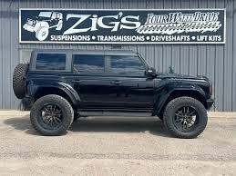

At Zigs Four Wheel Drive, we are passionate about building, repairing, and upgrading vehicles that are built to perform both on and off the road. What started as a love for four wheel drive vehicles, off-road performance, and custom fabrication has grown into a full-service shop capable of handling everything from routine maintenance to complete custom builds.
We specialize in off-road performance, suspension systems, driveline repairs, lift kits, fabrication, axle swaps, and drivetrain upgrades for trucks, Jeeps, SUVs, and trail rigs. Whether you are building a rock crawler, upgrading your daily driver, or repairing a hard-working 4x4, our goal is to deliver reliable work that is built to last.
Our shop handles far more than just off-road vehicles. We provide complete automotive repair and maintenance services including oil changes, diagnostics, brake work, electrical troubleshooting, transmission service, driveline repairs, and engine performance upgrades. We also install and configure Sniper EFI systems, ECMs, wiring systems, sensors, and performance electronics to help modernize older builds and improve reliability and power.
From mild upgrades to full custom fabrication, we take pride in doing quality work and treating every vehicle like it is our own. We understand that your truck or Jeep is more than just transportation — it is something you rely on, work with, and enjoy. That is why we focus on dependable workmanship, honest service, and building vehicles that can handle real-world use.
Whether you need basic maintenance, custom suspension work, driveline repairs, performance upgrades, or a complete off-road build, Zigs Four Wheel Drive is ready to help bring your project to life.
